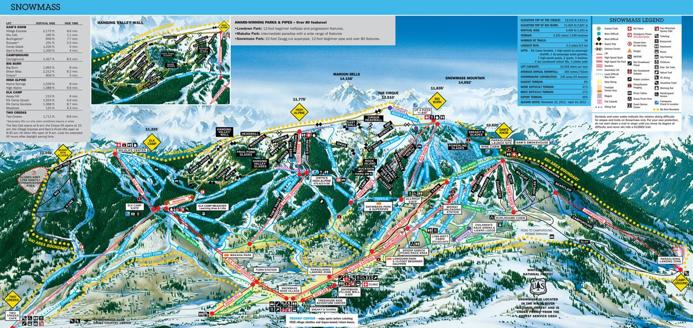

Aspen Snowmass is home to four unique mountains: Aspen Mountain, Aspen Highlands, Buttermilk and Snowmass. The sun shines 300 days a year and the other days are filled with snowfall covering the mountains in beautiful powder. You can ski right down to historic Aspen with over 100 bars and restaurants. Aspen Mountain and Highlands offer the steepest terrain, recommended for skiers and snowboarders looking for a thrill while Buttermilk and Snowmass are more family oriented.

×